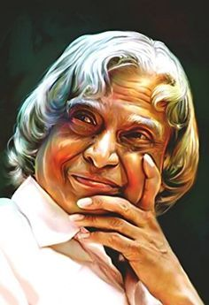

1931 – 2015
Missile Man of India & People's President
"Dream, dream, dream. Dreams transform into thoughts and thoughts result in action."

Dr. Avul Pakir Jainulabdeen Abdul Kalam was one of India's most respected scientists and leaders. Born on 15 October 1931 in Rameswaram, Tamil Nadu, he rose from humble beginnings to become a renowned aerospace scientist and the 11th President of India.
He played a crucial role in India's missile and space programs, earning the title "Missile Man of India." His contributions to the development of ballistic missile technology and launch vehicle technology made India stronger in defense and space research.
Dr. Kalam served as the President of India from 2002 to 2007. He was widely loved by students and young people for his motivational speeches, humility, and vision for a developed India.
Throughout his life, he encouraged youth to pursue knowledge, innovation, and excellence. His books such as "Wings of Fire", "Ignited Minds", and "India 2020" continue to inspire millions.
Dr. Kalam received numerous awards, including India's highest civilian honor, the Bharat Ratna. His legacy lives on through his teachings, achievements, and dedication to the nation.